Pero... ¿Quien es Lisette?
.jpeg)
Lisette es una mujer increible, con ganas de superarse y aprender de los retos da la vida.
Bueno, pues Lisette es una persona multifacética. Actualmente tiene 26 años de edad (es capricornio) y, a lo largo de su vida, ha tenido muchas aventuras (hasta el momento no se arrepiente de nada). Es hija menor con dos hermanos y ha sobrevivido a un sismo de magnitud 7.7 y a una pandemia. En un tes de fortalezas de personaje, resaltaron las siguientes:
Curiosidad
Impulso e interés por las experiencias y las cosas. Capacidad de encontrar, explorar y descubrir temas fascinantes.
Inteligencia social
Ser consciente de los motivos y sentimientos propios y de los demás. Saber qué hacer para encajar en distintas situaciones sociales. Capacidad entender las maneras de conectar con las demás personas.
Equidad
Capacidad de tratar a todas las personas de acuerdo con las nociones de equidad y justicia. No dejar que sentimientos personales sesguen al tomar decisiones sobre otras personas. Dar a todos una oportunidad justa.
Fromación academica
Sus intereses se forman principitalmente en el areá de ciencias y tecnologia.

Colegio de Ciencias y Humanidades (Bachillerato)
Termino su bachillerato en 3 años con materias enfocadas al area fisico-matematicas. (2013-2016)

Tecnica en mecatronica
En segundo año de bachillerato curso la carrera tecnica de "Iniciacion a la Mecatronica". (2015)

Taller electroquimica
Durante el bachillerato habia muchos talleres extracurriculares en los que me gusta pasar mi tiempo libre, uno de ellos, fue el taller de electroquimica, en el que trabaja con soluciones salinas, en las que el intercambio de iones generaban electricidad para mover un carrito de juguete.

Licenciatura en Ciencias de la Tierra
Curse una licenciatura en Ciencias de la Tierra con Orienctacion en Ciencias Acuaticas, tengo el 100% de mis creditos pero sin titulo. (2016-2021)


Experiencia Laboral
Debido a la gran falta de empleo y a una pandemia desastrosa solo he tenido tres empleos formales, los cuales se muestran a continuación
David's Bridal (2021-2024)
Mi función principal se centraba en la atención a cliente, en desarrolle mis habilidades de inteligencia social, empatia, comunicación asertiva y escucha activa. Tambien manejaba ciertos valores como la Honestidad, Compromiso y Responsabilidad. Durante este trabajo asisti como staff a eventos como "Expo Me Caso" y "Expo XV"

Instituto de Ingenieria, UNAM (2021-2022
Al termino de mi servicio social fui Becaria en el Instituto de Ingenieria, en donde di continuidad al proyecto en el que trabaje durante el servicio social, apoyaba con la organización y llenado de bases de datos y fui como tecnico en una campaña de investigacion en "La mancha - Veracruz"

Zapateria 3 Reyes (2018-2020)
Mi primer trabajo formal fue como vendedora en una Zapateria, inicialmente entre a laborar en temporada vacacional pero mi esfuerzo y buena organización me dieron la oportunidad de extender mi estancia.

Activdades de recreación
Disfruto mucho de las actividades físicas; he tomado clases de zumba, aeróbics, crossfit, natación, boxeo y danza árabe. Disfruta mucho de aprender y ha tomado cursos de bases de datos, peinado y maquillaje. Aunque no ha profundizado en ninguna de las actividades anteriores, ha adquirido las bases de cada una. No es muy buena en los idiomas, pero no se da por vencida y ha mantenido un nivel básico A1. Le gusta leer novelas románticas y de ficción. Su actividad favorita es caminar sin rumbo alguno con sus audífonos y últimamente se ha interesado mucho por las rodadas en motocicleta, donde viaja a varios lugares en compañía de su novio. Sus películas favoritas son del género de suspenso y ciencia ficción, y le gusta todos los géneros de música. Realmente creo que me gustan muchas cosas en la vida y como se seria complicado explicarlas todas, a continuacion dejare imagenes representativas de mi.
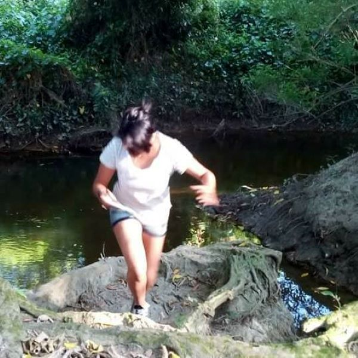
Intrepida
Me gusta mucho la naturaleza e imagino que soy un India Jones.
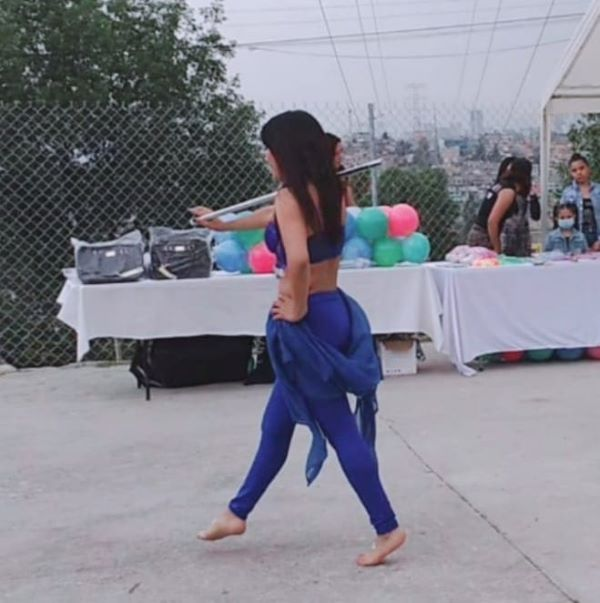
Danza
Me gusta mucho la danza, tanto verla como praticarla. Estuve aprendiendo Danza Arabe.
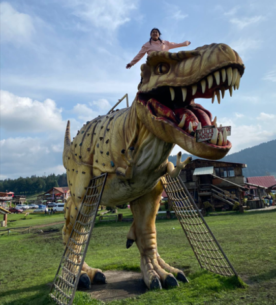
Jugar
LLevo una niña muy inquieta en mi interior, me gustan los retos fisicos.
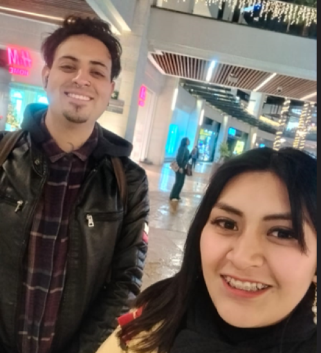
Me encanta pasar tiempo con mi novio
Es importante en mi vida.
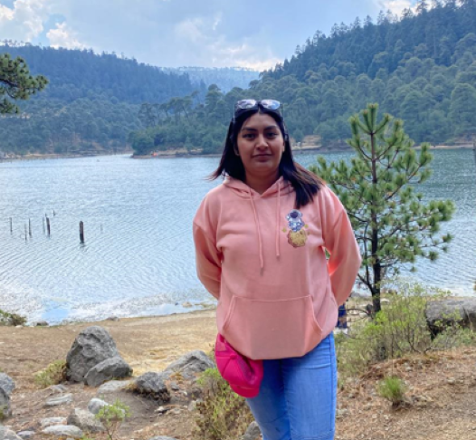
Me gustan mucho los lugares tranquilos
Esta foto fue en la presa iturbide.

Comida
Soy muy feliz comiendo.
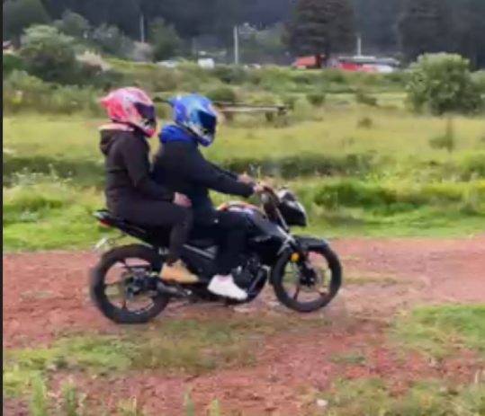
Mini-viajes
Disfruto salir de la Ciudad a pueblitos magicos cercanos.
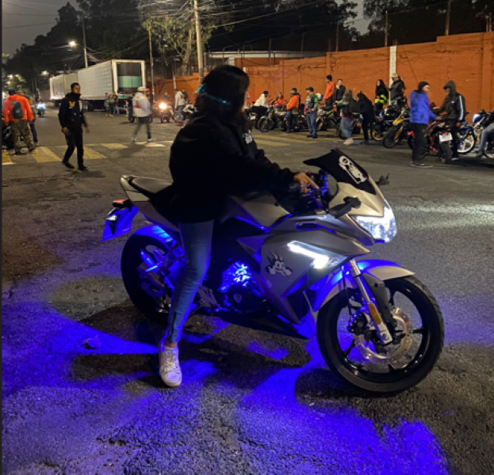
Motociclismo
Yo tambien manejo moto, pero aun no me siento 100% segura haciendolo.
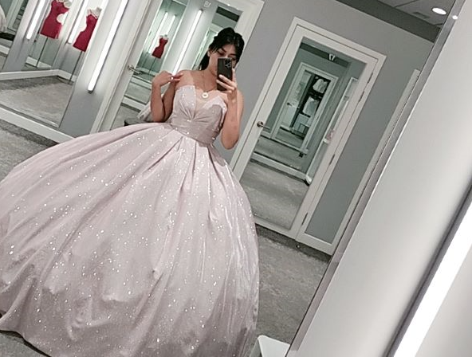
Vestidos de XV años
Me gustan mucho los vestidos de XV años y durante mi trabajo en David's Bridal me probe muchos.
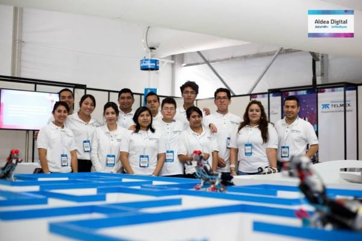
Aldea Digital
Durante mis practicas profecionales como Tecnica en Macatronica, estuve como Staff en Aldea Digital.
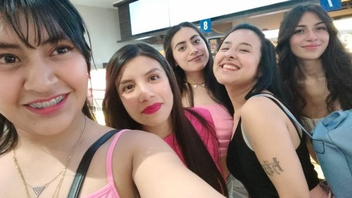
Me gusta hacer amigos
He convivido con muchas personasen diferentes ocasiones y siempre me ha gustado tener una buena platica,
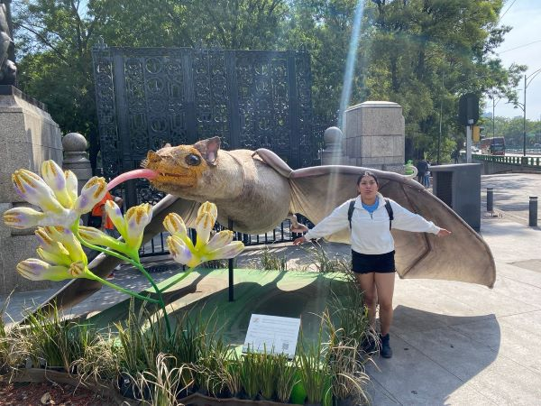
Animales
Me gustan mucho los animales, me parecen sosprendentes y de los que podemos aprender muchas cosas.
Gustos y preferencias
A continuacion te mostrare una lista del TOP 10 mis canciones favoritas del momento, podras a acceder al video de youtube seleccionando la canción. Ademas podras ver en orden mi gusto en generos de peliculas.
Top 10 de mis canciones favoritas del momento
Lista de los generos de peliculas que me gustan.
- Suspenso
- Terror
- Ciencia ficcion
- Romanticas
- Animadas
- Comedia
- Musicales